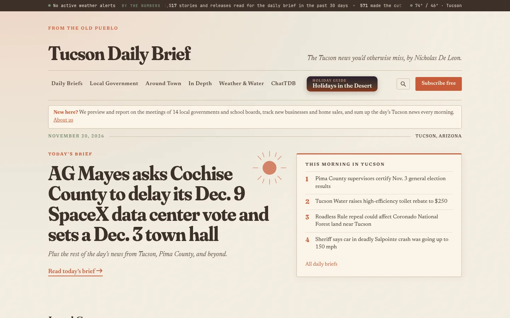

Tucson Daily Brief
Publishing dailyA one-person local newsroom for metro Tucson, free to read with no ads. Every morning Claude Opus reads about two dozen local sources and writes the Daily Brief, with every item linked to where it came from. The site previews the agendas of 14 local governments and school boards, and goes out as a podcast read by an AI clone of my voice, a weekly newsletter and a Spanish edition.
It also runs ChatTDB, which answers questions about Tucson using only the site's own archive, with citations; Who They Are, org charts of the area's elected and appointed officials; and daily checks of permits, liquor licenses and development filings that rarely get reported anywhere else.
Covered by the Reuters Institute, TWiT's Intelligent Machines and This Week in Tech, and KGUN 9.
Visit tucsondailybrief.comThe live AI reporter
- Shows up on its own. When a council or school board posts an agenda, it schedules itself to cover the meeting.
- Listens live. It joins whatever livestream the body uses, even Zoom or Teams, transcribes every word as it's spoken, and stops when the meeting adjourns.
- Drafts the story. Claude Opus writes a news report from the transcript.
- I edit and publish. I check every draft against the transcript before it goes live.
More than 70 meeting reports since March 2026.